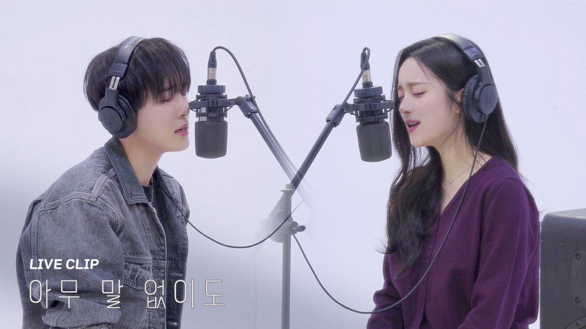
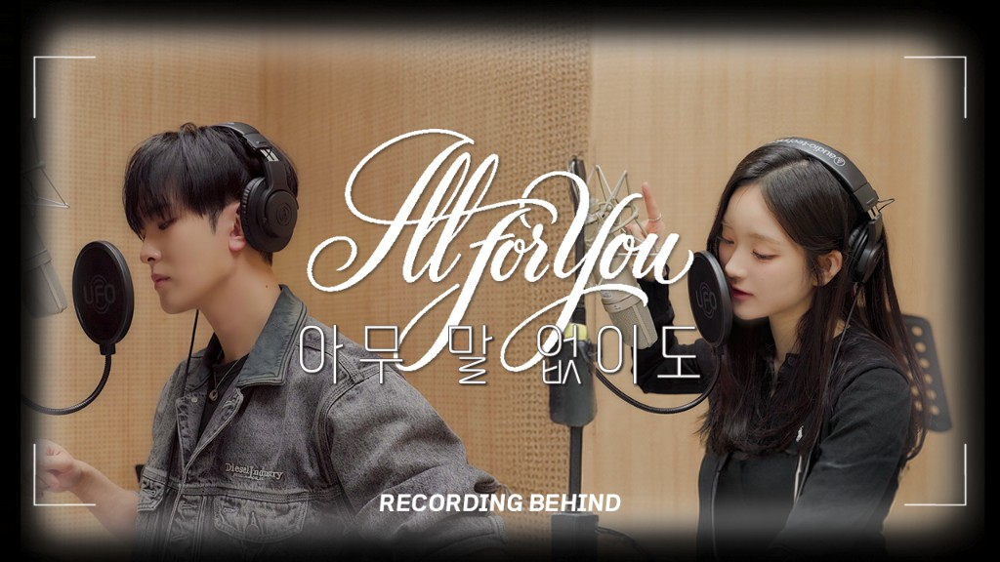
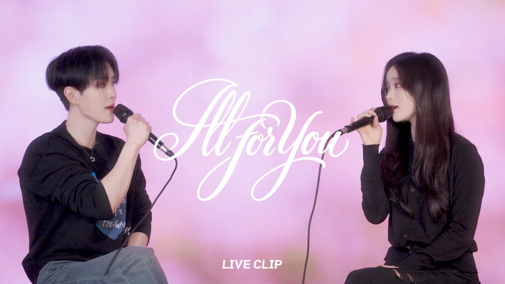

MBC+
음원·콘텐츠 유통 및 방송·디지털·팬 플랫폼 기반 홍보/노출 채널 연계
팬 투표와 이벤트를 통해 프로젝트의 시작점에 팬을 참여시키고, 선정된 곡은 실제 아티스트의 녹음, 영상 콘텐츠 제작, 음원 발매, 라이브 클립 공개, 쇼챔피언 음악방송 무대까지 하나의 흐름으로 확장됩니다.
음원·콘텐츠 유통 및 방송·디지털·팬 플랫폼 기반 홍보/노출 채널 연계
음원 제작부터 영상, 캠페인 콘텐츠까지 전체 프로젝트 제작 및 운영 총괄
남녀 아티스트 소속 기획사가 참여하여 라인업, 일정, 녹음, 촬영, 방송 협조 등 실무 협업

MBC+의 대표 K-POP 디지털 채널. 클립, 티저, 릴리즈 콘텐츠 노출과 발매 후 확산 채널로 활용됩니다.

라이브 클립과 스튜디오 퍼포먼스 중심의 영상 IP 채널. 듀엣 프로젝트의 무드와 퍼포먼스를 영상 콘텐츠로 확장합니다.

팬 커뮤니티, 투표, 이벤트 기반 플랫폼. DUET PROJECT의 팬 참여 구조와 직접 연결되는 채널입니다.

The Waves가 운영하는 AI 기반 K-POP 콘텐츠 제작 시스템. 음원·영상 제작 과정에 AI 엔진과 제작 지원을 제공하여 프로젝트의 콘텐츠 확장을 돕습니다.




음원 발매부터 라이브 클립, 방송 무대, 비하인드 콘텐츠까지
하나의 시즌으로 완성된 첫 번째 실행 사례입니다.